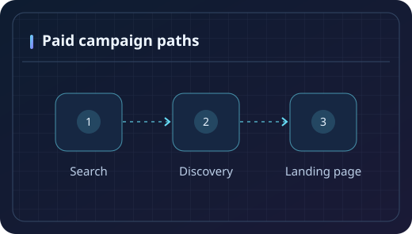
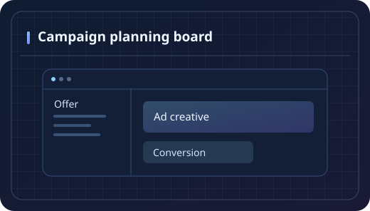
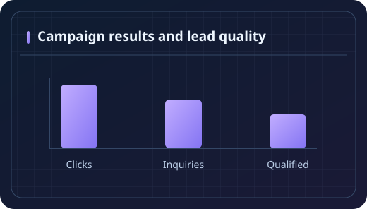

Paid Ads Management
Plan Google Ads and Meta campaigns with a clear offer, a page that matches it, and a way to measure inquiries or sales.
Choose the conversion before the channel
Start with the result you want to count: a qualified inquiry, a booked appointment or a purchase. Then decide whether to focus on search traffic, audience discovery or an existing campaign that needs a review.
Give each campaign a clear landing page
Match the ad to the offer on the page. Someone clicking a website redesign ad should land on a page that explains the redesign process and gives them a clear way to ask for a quote. See our website and landing page services.
Agree on what you will review
Set a media budget and agree on how qualified inquiries or purchases will be measured. Review search terms, creative, landing page behavior and lead quality together so you can decide what to adjust.
What to bring to a campaign review
- Current offer
- Share the product, service or promotion you’re advertising and the page people land on.
- Conversion path
- Show how a visitor moves from the ad to a form, purchase or appointment, and where you can verify completion.
- Lead feedback
- Bring a few anonymized examples of useful and unsuitable inquiries so the campaign can be evaluated against real outcomes.
How Google and Meta can support different goals
Search campaigns can be useful when people already describe what they need, such as searching for an ecommerce developer. Meta can help present a product or service to an audience that may respond to the offer and creative. Decide what you can measure and how much creative the team can maintain before splitting the budget.
For a local website service, a useful test could send one offer to a dedicated page and count completed quote requests. For an online store, start with offers and products that are in stock, then check shipping and checkout before increasing traffic.

What a campaign setup can cover
Agree on target locations, budget, the main action and which landing pages will receive traffic. Then define the campaign structure, creative needs and how reporting should distinguish a completed order or confirmed inquiry from a click.
Our paid ads launch checklist walks through preflight testing. If you’re sending visitors to an existing site, website optimization can cover problems such as unclear mobile links or pages that take a long time to become usable.

Review lead quality with the numbers
A campaign report can show where spend went and what was recorded. Your sales team can add context by marking whether inquiries were relevant, whether anyone followed up and which turned into a quote or booking.
Agree on the review period and define the first decision it should support. That might be improving the landing page, changing the offer or reviewing irrelevant search terms. Budget forecasts depend on the market, creative and account history, so start with a measurable scope.

FAQ
Is ad spend included in management?
Include your media budget in the brief. Management scope and platform spend can then be discussed separately.
Can you review an existing campaign?
Yes. Share the campaign goal, landing page and recent performance summary. Keep account credentials private and use account permissions when access is needed.